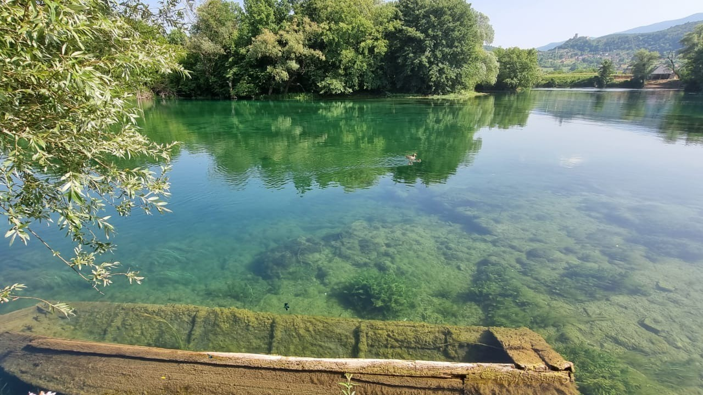

For years, I’ve worked on the ground, in the heart of hydropower, and have always been drawn to the raw power of water. But it wasn't until a recent visit to the Una river in Bosnia and Herzegovina that I truly saw the hidden value we so often miss. This realization made me question our industry's biggest blind spot.
The Revelation of the River Mint
I’ve been to the breathtaking Štrbački buk waterfall many times. It was only on a recent trip that I realized the unique scent I loved came from river mint, a small plant growing along the riverbed. This simple observation was a revelation: We have become experts at measuring the obvious—the kilowatt-hour, the pure output of a machine. But what about the hidden value? What about the river mint?
The Problem with Our Current Model
The reality is that our current approach is incomplete. We treat hydropower as a pure financial equation, ignoring the ecological and natural capital we rely on. In my experience, this mindset leads to a focus on treating symptoms, not causes.
- We focus on fixing abrasion—the wear and tear from sediment—but ignore the systemic issues, like ineffective sediment management or flawed turbine design, that cause the problem in the first place.
- This is not a criticism of hydropower itself, but of the way we measure its success. We're great at counting the grass, but we’re blind to the river mint.
Visionary Insight: We need a quantifiable counter-value system where the preservation of nature—the health of the river, its biodiversity, and its natural beauty—is given real economic weight.
A Vision for the Future: The Symbiosis Standard
I believe we need a new, international standard for project viability that looks beyond mere energy output. I call this the Symbiosis Standard. In this model, a project's value wouldn't be judged solely by its energy generation, but by its ability to exist in harmony with the environment.
The Symbiosis Standard in Practice:
- A project that efficiently produces energy but damages a river would have a lower overall score.
- A project that produces slightly less power but ensures the river's health remains intact would score higher.
This is not just a philosophical idea; it's a call for a real, quantifiable system that can be integrated into project planning. By standardizing this approach, we can build trust, show that profitability and preservation are not opposing forces, and make our industry more sustainable than ever before.
Join the conversation and follow the movement for sustainable asset integrity.
JOIN THE DEBATE